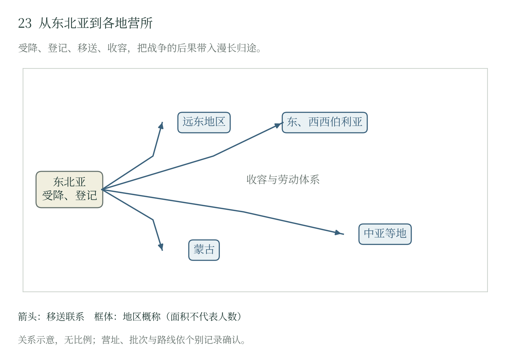

第十六章 劳动抑留：制度、身体与战争责任
战场结束以后的制度转换
安冈精治在泰舍特地区患病，接受治疗后又被安排到其他劳动单位；日野治水在塔什干停止原工作，改作杂役，继续等候归国。他们能够做什么工作、何时休养、何时离开，都受营地安排支配。1945年受降后的登记、转运和派工，把大批日本人送入苏联劳动体系。战场上的败局，延续成工地上的劳作、医院中的治疗和家属漫长的等候。
《波茨坦公告》第九项规定，日本军队完全解除武装后，应获准回家过和平与生产的生活；第十项另述战争罪犯的惩办。解除武装、追究具体罪行与回归社会，在这一安排中各有位置。随后大规模劳动抑留把具备劳动能力作为选送条件，使人员处置同时服务于接收国的生产任务。对个人罪行的司法判断与对一批劳动力的行政配置，由不同机关、依据和程序实施。〔1〕
华西列夫斯基8月18日的命令已要求善待投降的日满军，范围覆盖受降接收与营中收容，并由部队指挥员和军官直接监督。五天后的劳动配置决定继而规定人员去向与使用方式。两份命令分别确立待遇义务和配置任务，供给、派工与治疗则是它们进入个人生活的执行环节。〔2〕
国家国防委员会1945年8月23日第9898сс号决定，把接收日本战俘列为跨部门任务。题名同时列出接收、安置和劳动使用；第一条要求内务人民委员部接收并送往战俘营的日本人至多五十万。第二条把选择工作交给三个方面军军事委员会，由它们同战俘与被拘留者总管理局代表共同办理，并以劳动能力为条件。这项决定首先规定了一次行政动员的规模，随后各地实际接收和死亡人数另由执行材料记录。〔3〕
劳动力如何被组织
决定要求出发前按每营一千人编成建筑营，由战俘中的初级军官和下士官担任营、连管理人员，并优先使用工兵出身者，每营配置两名战俘医务人员。原有军队的技能和等级关系，由接收机关用于点名、押运与劳动编组。失败一方的组织资源因而进入胜利一方的生产体系：初级军官维持队伍，医务人员照料伤病者，专业技能影响派工。〔4〕
配额围绕铁路、木材、矿山和工业建设展开。十五万人划给贝加尔—阿穆尔铁路若干区段，包括泰舍特至乌斯季库特；乌兹别克的两万人用于冶金、煤业、石油等企业。其他人员分赴滨海、哈巴罗夫斯克、赤塔、伊尔库茨克和哈萨克等地。“西伯利亚抑留”在地理上实际跨越了苏联多个地区，两位手记作者正被送往其中相距遥远的泰舍特和塔什干。〔5〕
这些配额合计五十万人，按生产部门和地区分配责任。铁路、矿山、油田、港口与工厂规定了人员去向，体力筛选为这些任务选择劳动力。离营则另经健康、政治甄别和司法程序等不同审核。接收时的生产需求与后来控制离营的依据，在同一营地体系中共同作用。
运输条款要求每列车携带两个月食品，从缴获物资中筹措冬夏衣服、被褥、内衣和炊具，清点以后交给内务机关。队伍经铁路或水路前往指定地点，军队负责途中警卫，红军后勤负责人监督供应和运输。八月至十月的运输安排又涉及铁路、海运与河运部门。人、粮食、衣物和车辆须在同一日程内抵达，任何一项延误都可能改变旅途中的身体状况。
住房准备与转运同时推进。各部门和地方党组织须在九月至十月分期备妥住处、取暖和照明；条文另列帐篷、修补冬装、医务人员、车辆及铁丝网。八月至十月运送人员时，接收设施也正在准备。寒冷增加生存压力，到达顺序、供暖进度和冬装交付决定人怎样承受这种压力。〔6〕
供给、劳动与身体
贝利亚负责监督这项动员。内务系统管理拘束，产业部门使用劳动力，军队和交通机关负责转运，卫生与军队医疗机关筹措最低必要床位。同一个人沿途吃什么、到达后住在哪里、生病后能否入院，分属几个机关办理。每个机关完成自己的一项任务以后，仍须有人照看整个行程。统一监督的责任正在这里。
第九条要求另拟食品供应标准，参照日军原有标准；第十二条交办最低必要床位。政策已经确认人员需要食物和治疗，日常保障则经过配给标准、运输、分发和收治几个环节。对生产机关而言，供给维持劳动能力；对受拘束者而言，同样的食物和治疗维持生命。两种利益可以相合，工期、库存和床位不足时又会发生冲突。管理者如何调整劳动量和供应，直接影响生产成本落在何处。〔7〕
派工时，人按当时的体力被挑选；经过运输和劳动，这副身体又会改变。起初能够工作的人，后来可能住院、转岗，或被列入暂不适合运输的类别。疾病还会影响归期。医生的一次判断，在工地上关系到休息与改岗，在遣返时则关系到能否乘船。 〔8〕
日本厚生劳动省根据归还者听取调查，将旧苏联及蒙古地区的抑留人数估计为约57.5万人，死亡人数估计为约5.5万人。第9898号决定的五十万是政策规模，厚劳省约数则估计特定地区实际经历抑留与死亡的人数。两者分别展示动员与损害的量级。死亡总数标明了制度后果的严重程度，具体死亡怎样形成，仍由病历、供给和劳动记录中的时间与行动说明。〔9〕
幸存者也承担着数年无法自主支配的时间。伤病使职业技能暂时失去用途，治疗后的新岗位改变生活，离营决定又改变归期。现存两份手记分别来自泰舍特与塔什干，保留了这些转换。把两人的经历放在一起，劳动抑留便同时呈现出木材生产、城市建设、医疗和待返的差异。
苏方决定接收多少人、送往何处、何时启程，也就承担了备妥口粮、冬装、住处和医疗的责任。远距离转运与短期集中确有困难，发送和派工的日程却仍由主管机关决定。这些决定最终要由受拘束者的身体承受。营地怎样治疗伤病、调整岗位，两份手记留下了较近距离的记录。
泰舍特：从伐木到医疗与转岗
安冈精治追述，1945年10月由海林一带出发，经绥芬河进入苏联，在泰舍特下车后又行军数日，进入他称为“第七地区第九收容所”的地点，最初参加伐木。国家配额里的铁路与木材需求，在他的叙述中变为具体的运输、行军和劳动场所。 〔10〕
1946年，安冈的旧伤发生感染，住院接受治疗，其中包括日本军医的诊治。次年，他被转往农场，后来又到枕木作业单位。从伐木到医院，再到新的劳动地点，他的营地生活随着身体状况和派工安排一再改变。
治疗给了安冈恢复的机会。病后，他仍由管理机关安排工作，归国要等待另一个决定。他的经历让人看见营地医疗的两重作用：它救治个人，也帮助恢复可供使用的劳动力。一次住院改变了眼前的生活，往后的去向仍由营地掌握。 〔11〕
厚生劳动省伊尔库茨克地区埋葬地索引列有医院、支部和部队等多个节点，分别承担收容、医疗与埋葬的职能。人从劳动地点进入医院，治疗和看护开始影响生活；死亡者则在埋葬记录中留下最后位置。家属追寻下落时，这些不同设施成为重新认识个人处境的线索。〔12〕
塔什干：职业技能与归国筛选
日野治水记述，约在1946年7月下旬进入塔什干第五收容所，以泥瓦匠登记后参加砌砖，后来转到第九收容所从事工厂建设。职业技能在这里直接影响派工。中央配置到乌兹别克的人力，须经地方登记才成为能用于建筑的劳动队伍。日野留下的砖工经历，使中亚抑留呈现出城市建设与工业生产的一面。
1948年8月，其他人获准回国，日野被留下。次年，他因关节疾病获准停止原工作，随后改作葡萄酒厂杂役，直到1949年9月才进入归国队伍。手艺曾使他成为砖工，疾病后来让他换了岗位，归期仍要继续等候。从免于原来的劳动，到列入归国队伍，再到真正返家，他还须一道道办理。 〔13〕
日野在1991年刊行的《塔什干抑留记》中，回想1948年8月全员在广场集合、等候归国点名的那一天，留下“最後まで名前は呼ばれず”一句：直到最后，也没有叫到我的名字。命令把一批归国者列入名册，点名则让获准离去与继续留下的差别落到本人身上。次年，他的名字终于也列入了归国名单。此前那些等候的日子，在这句简短的追述中保留下来。〔14〕
俄国学者谢尔盖·金对1948年内务部命令的研究，描述了包括营长、医生和业务人员在内的遣返筛选委员会，并列出已判刑人员、特定情报与警察人员，以及暂不适合运输的病人等排除类别。这些筛选依据会影响不同人员的归期；日野手记留下的是自己继续滞留的经历。〔15〕
泰舍特的伐木和枕木作业、塔什干的砌砖和工厂建设，给身体带来不同负担；两地都由营地决定派工、治疗后的岗位与离营次序。气候和工种影响每天的工作，技能使个人进入特定岗位，伤病又使这种位置改变。管理责任就在这些转换中表现出来：何时停止原工作，怎样安排治疗与新任务，是否准许离营。
战争责任与具体待遇
四十年前，松山的部分俄国军官曾把获准外出的最后十几分钟用在骑车上。管理人员面对的是归营时限、誓词的宗教含义，以及怎样让规则得到遵守。1905年和约随后把相互交还战俘、指定接收人员与港口、核销费用写成双方政府的任务。人的归途有了明确的交接程序。〔16〕
1945年苏联第9898号决定则先按劳动能力挑选人员，编组运输，再把他们分配给生产部门。为战后建设征用被俘军人的劳动，是苏联政府作出的政策选择；运输、营房、口粮和医疗的准备程度，决定这项选择会向人的身体索取多大代价。〔17〕 两段经历把国家组织能力的不同用途摆在眼前：它既能安排可活动的时间和归国手续，也能把人长途运往生产岗位。评价收容政策，最有分量的是被俘者实际得到的活动、休养和离营机会，以及各级机关为这些机会承担了多少责任。
战俘史把战争责任向受降以后的国家行动延伸。日本帝国发动和扩大侵略战争，相关决策、战场命令及个人行为各有责任；苏方决定接收、迁移和劳动使用以后，也取得了对被拘束者生活的控制，并承担相应后果。一个人原属何支军队，与他后来得到怎样的食物、医疗和工作安排，分别指向具体的行为和决定。
King与Muminov的研究把日本被拘留人员的劳动力价值、政治用途及战后记忆放在同一视野，并指出回忆叙述中帝国经历的淡化。个人痛苦留下深刻记忆，作者对自身参战背景的叙述却可能简略。将两类记录并置，历史的责任范围由此扩大：战俘自身的遭遇得到说明，其所属国家在亚洲造成的损害也继续占有位置。〔18〕
五十万的计划在中央是劳动配置，在地方落实为营房、列车和工地，在个人则成为每天能够承受多少工作的限制。供给与医疗可以减轻负担，派工和留营又可能延长它。生产机关获得劳动，受拘束者承担伤病与失去自由的时间，家属承担离散；资源和决定的后果分布在不同主体。
苏联凭军事胜利控制了大批日军人员，又把他们的劳动用于战后生产。让这些人归国，须从工地放人，按名册逐一交接，再安排运输与接收。营地的责任由此延伸到港口，战俘的经历也从劳动转入归途。
本章命令版本、个人手记与营号对应范围，见《专题参考附录》

1945年以后，军人与其他被拘押者进入不同地区的收容体系。五十万是第9898号决定的计划规模；约57.5万是日方对旧苏联及蒙古地区的调查估计，两种数字各有口径。
随文简图 · 自然地理底图：Natural Earth；历史依据见本章注及大图23逐图来源。大图23（图册第23页）
本章注释
- 〔1〕 C006，第九、十项；C101，第1—3条 ↩
- 〔2〕 B602，文献433第2项，印56 ↩
- 〔3〕 C101，第1—2条 ↩
- 〔4〕 C101，第2条乙项 ↩
- 〔5〕 C101，第3条；C102；C103 ↩
- 〔6〕 C101，第2、4—8、10—13条 ↩
- 〔7〕 C101，第4、9、12、14条 ↩
- 〔8〕 C101，第2条；C106，筛选委员会及病人类别段 ↩
- 〔9〕 C002，“遺骨収集の実施”；C101，第1—3条 ↩
- 〔10〕 C103，印61—68 ↩
- 〔11〕 C103，印61—68、75—78 ↩
- 〔12〕 C109，第七收容所相关表行；C014，位置说明 ↩
- 〔13〕 C102，印85—87上半 ↩
- 〔14〕 C102，印86；C112，书目 ↩
- 〔15〕 C106，1948年命令与筛选委员会段 ↩
- 〔16〕 M01，第十三条 ↩
- 〔17〕 C101，第1—4、8—12条 ↩
- 〔18〕 C013，接受稿页2—8、27—31 ↩